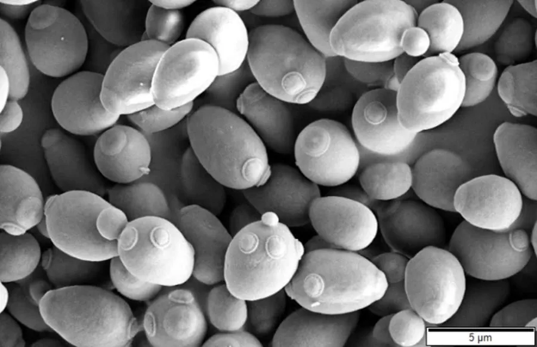

真菌 · 真菌界
酿酒酵母 Saccharomyces cerevisiae

酿酒酵母是单细胞真菌，能把糖发酵成酒精和二氧化碳，是酿酒、做面包和生物工程的重要模式微生物。
- 分类
- 门子囊菌门纲酵母纲目酵母目科酵母科属酵母属
- 栖息环境
- 含糖的果实表面、发酵食品与人工培养基，人工培养为主
- 地理分布
- 世界性分布，随人类发酵活动广泛传播
- 保护级别
- 暂无评估（工业微生物）
物种志
酿酒酵母是子囊菌门酵母科的单细胞真菌，细胞呈卵圆形或球形，直径约 5–10 μm，以出芽方式繁殖。菌落呈乳白色、表面光滑、有发酵香味。它通过有氧呼吸或厌氧发酵获取能量：在缺氧条件下把葡萄糖转化为酒精和二氧化碳，在含氧条件下则大量繁殖菌体。
酿酒酵母是人类利用最早、研究最深入的真菌之一，广泛应用于啤酒、葡萄酒、白酒、黄酒和面包的制作，被称为“发酵之母”。它也是现代生物学的重要模式生物，在细胞周期、基因调控和遗传学研究中贡献巨大，是第一个完成全基因组测序的真核生物。酿酒酵母的菌体富含蛋白质和 B 族维生素，可制成酵母粉、酵母提取物，用作食品添加剂和饲料；工业上还用它生产乙醇、酶制剂和生物燃料。
形态与习性
- 细胞单细胞卵圆形，直径约 5–10 μm
- 繁殖出芽繁殖
- 菌落乳白色，表面光滑
- 发酵把糖转化为酒精与二氧化碳
- 用途酿酒、做面包、生产乙醇
- 科研重要模式生物，首个完成测序的真核生物
趣味知识
- 酿酒酵母能把糖发酵成酒精和二氧化碳，是酿酒和做面包的关键。
- 它是第一个完成全基因组测序的真核生物。
- 酵母粉、酵母提取物也是酿酒酵母的产品，可作食品添加剂。